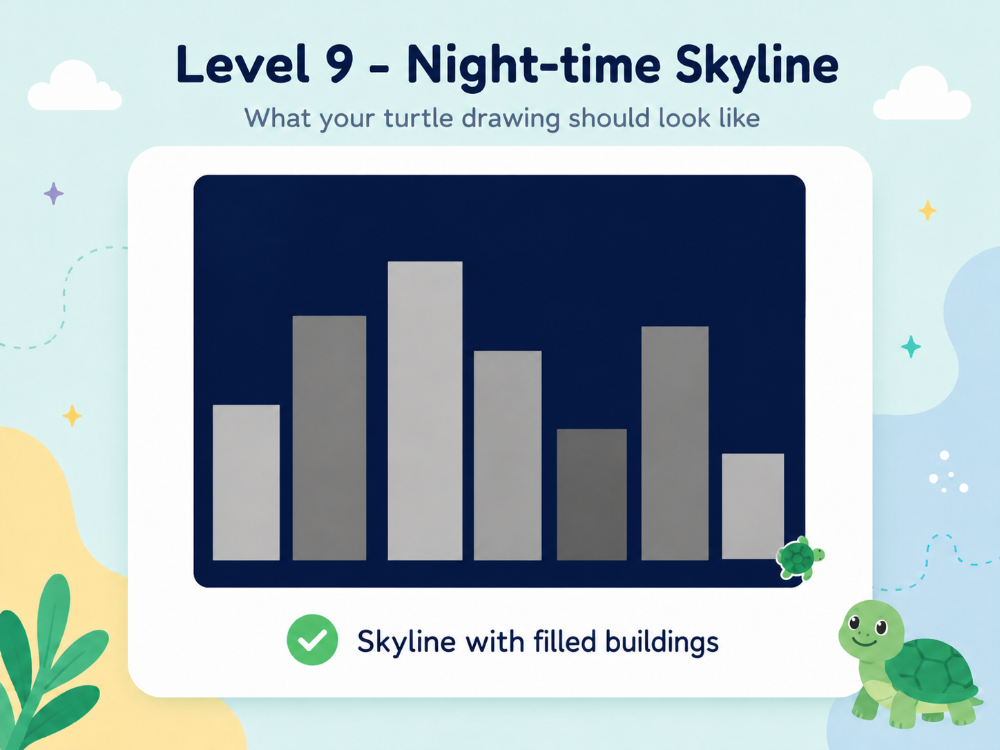

Combine coordinates, loops and colour
Complex pictures are built from simple shapes. Coordinates help position each building accurately.
Complete draw_building() so it draws and fills a rectangle. Then use the supplied lists to draw a skyline.

Your drawing should have the same main structure. Small differences in position or colour are fine unless the mission gives exact values.
turtle.goto(x + width, y) turtle.goto(x + width, y + height)
Use the pattern to help you, but complete the starter code in the editor.